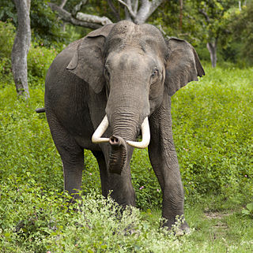

Слон
Общая информация
Слоно́вые, или слоны́ (лат. Elephantidae), — семейство
класса млекопитающих из отряда хоботных.
В настоящее время к этому семейству относятся 3 ныне живущих
вида. Африканские саванные слоны — наиболее крупные
наземные млекопитающие.
Классификация
Физиологические и морфологические различия между африканским
слоном (Loxodonta africana, слева) и азиатским слоном (Elephas maximus, справа):
Размер ушей;
Форма лба;
Только у некоторых азиатских слонов есть бивни;
Количество «колец» хобота;
Количество ногтей;
Длина хвоста;
Спина африканского слона опускается вниз, а у азиатского слона она выгибается вверх.
Питание
В естественных условиях рацион питания слонов напрямую зависит от региона их обитания.
Слоны, живущие на юге Индии, к примеру, любят жевать листву фикуса, слоны же, обитающие
в Зимбабве, потребляют совсем другие растения. Источник пищи слонов меняется также в
зависимости от сезонов засухи или дождей. Вообще же в рацион этих животных входят листья,
кора и плоды различных деревьев, трава, которая удовлетворяет их потребность в минералах.
Для перемалывания пищи при жевании слонам служат коренные зубы, расположенные во рту на
обеих челюстях. Однако, в отличие от бивней, они не отличаются долговечностью и с возрастом
постепенно стираются и выпадают, уступая место новым. Всего в течение жизни у слонов сменяется
шесть комплектов коренных зубов. Только один зуб слона может весить до девяти килограмм. Когда
старые слоны лишаются последних зубов, они обычно направляются к берегам водоёмов или в заболоченные
районы, где есть мягкая растительность, не требующая тщательного пережёвывания. Однако в конечном
итоге, когда и такое питание становится невозможным, они слабеют и умирают от истощения.
Основной пищей для слонов в неволе служат трава и сено. Любимым лакомством слонов служат
различные сладкие плоды, такие как яблоки и бананы. Из овощей слоны любят морковь.
Также большой популярностью пользуются печенье и хлеб. Слоны, как и люди, любят конфеты
различных сортов. И, так же как у людей, у слонов есть риск переедания сладкого. Как
следствие, у животного появляются проблемы со здоровьем. Слон толстеет, его поведение
становится неестественным: животное ходит вдоль ограды пошатываясь, ожидая прихода
посетителей с долгожданными конфетами. Также отмечено, что слон, наевшийся перезревших
и забродивших фруктов, может опьянеть.
За один день слон потребляет около 300 кг листьев и травы, содержащих высокий процент
влаги. Это касается слонов, живущих на свободе. В неволе взрослый слон съедает около 30 кг
сена, 10 кг овощей, 10 кг хлеба. В зависимости от температуры воздуха слон выпивает от
100 до 300 литров воды за один день.

Литература
- МЕТОДИЧЕСКОЕ РУКОВОДСТВО ПО ВЫПОЛНЕНИЮ ЛАБОРАТОРНОЙ РАБОТЫ №2. Авторы-разработчики: Жмак Егор Иванович
- Слоны // Энциклопедический словарь Брокгауза и Ефрона : в 86 т. (82 т. и 4 доп.). — СПб., 1890—1907.
- Shoshani, J. Comparing the Living Elephants. — P. 36–51.
- Easa, P. S. Musth in Asian Elephants. — P. 85–86.
- Слоны // Энциклопедический словарь Брокгауза и Ефрона : в 86 т. (82 т. и 4 доп.). — СПб., 1890—1907.